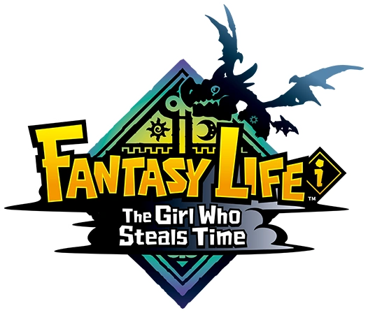

Fantasy Life i: The Girl Who Steals Time

| Release Date: | May 21st, 2025 |
| Genre: | RPG Life Simulator |
| Developer: | Level-5 |
| Platform: | Nintendo Switch, Playstation 5, Xbox Series X, and PC |
| Details: | Website |
Fantasy Life i: The Girl Who Steals Time recently released this year from Level-5, and it took over all my time for a couple weeks. I heard about it from Second Wind a while ago and thought it looked like a game my fiancee would enjoy. I was still playing Xenoblade X at the time, so I threw it onto my backlog, but she did end up getting it before me. I'd watch a bit of it over her shoulder and kept thinking "man that looks like fun". Once I finished Xenoblade, I bought, booted it up, and watched two weeks of my spare time vanish. Now, I've reached late game, over 80 hours in, and while I don't play it nearly as much, I continue to come back to it to work on the last loose ends I need to finish up.
Gameplay
The thing with this game, is that it's like a mixture of a TON of different genres and features, that it feels a little overwhelming, but they feed into each other so no matter what area you're playing in, your progressing you abilities elsewhere too. AT it's core, it's an RPG with typical leveling systems, hack-and-slash combat, and exploration, but it separates out your different skills into 14 different "lives", each with their own levels and skill trees. As you utilize that skill, either that be in combat, gathering its specific resource, or crafting items, that life will improve. How they interact with each other is through the resources. You'll take your combat skill to defeat monsters for their drops and to clear out areas, then switch to your gathering lives to harvest resources, then utilize those drops and resources to craft stronger items and consumables, allowing you to defeat stronger monsters and harvest more valuable resources, further advancing those lives.
On top of the RPG elements, the game itself takes place in three different worlds! Each one tend to focus on a different flavor of gameplay, which was a nice way of separating these from each other:
- The Present Day - The Present Day takes place on an island devoid of life, with some great tragedy taken place eons ago, leaving behind a massive hole. While story happens within the depth to uncover the island's mystery, it also acts as your base of operations. You get tasked with bringing life back to this island, which you accomplish by decorating it with many different objects, terraforming, and structures to beautify the island and make it home for yourself and your companions. It feels a LOT like Animal Crossing: New Horizons, with the island decorating and villager management. Just increasing your affinity with your islanders also improves their stats in their skillsets.
- The Past - The Past takes place on the same island back in its heyday, which was a sprawling island nation and home to the "Life Masters". This is where the RPG happens and majority of the story. To progress further into the depths in the present, you need to learn about the island while it was still thriving and master your lives to overcome obstacles. All the quests come from the people of this land, many asking for resources and objects tied to your lives to aid in their progression.
- Ginormosia - A completely separate world from the islands, filled with monsters that are both hostile and friendly. It's like a lite Breath of the Wild, as you aid to uncover the land by visiting towers in each region. I found this area to be the "resource-gathering" world, as you complete the mini quests in a region, it can be leveled-up to strengthen the monsters and resources, providing for valuable stuff for later in the game, including legendary resources for the end-game items.
- On top of the worlds, you eventually gain access to Treasure Groves, which are like Cult of the Lamb expeditions, randomly generated tree of rooms that each require a task to be completed before you can move to an adjacent room. The bottom of the grove has a boss room that tests your ability in one of your gathering lives or in your combat. It great way to grind levels for your combat and gathering lives, while providing some unique resources needed to progress of crafting lives!
It's a lot, but how each life ties back to each other and the ease of diversifying your gameplay made it easy to sink hours into the game. I spent many nights staying up far too late due to the classic "just one more task", and always felt like I was constantly progressing, either in the story or in my lives. If felt that way till I reached the end game, where after the story has finished and am left with mastering my lives, it requires grinding majority of time into the Treasure Groves or Ginormosia for resources that randomly appear. I don't mind grinding for resources, but I don't like the time required being unknown due to its randomness. I only have so much patience and time.
Story & Worldbuilding
The story itself is fairly basic. There's a bit of mystery presented at the beginning, but didn't really get me to start "theorycrafting" like other games that we more compelling. It's a classic "Save the World", with whatever twists in the story being heavily hinted at. Eventually I was just progressing the story to unlock new areas to progress my lives, as I found the gameplay was what was keeping me playing. The writing and characters were fine, just wasn't the biggest draw for me. It was nice to see how the island looked before and after whatever tragedy occurred, but anything with time travel involved ends up being a little silly to me.
Overall Thoughts
This game was mainly a gameplay-focused sort of experience for me. The story was a driver for explaining the life system and the different areas of resources, but what kept me coming back was the constant serotonin of completing quests and gaining power through my own abilities. Completing the story, decorating my island, and my equipment came from my own hard work of diving into the mines for rare resources, fighting off difficult beasts for their loot, and hammering away at the crafting stations to create whatever I desired. It was a really fun experience, and was super nice to play it along with my fiancee! We did dabble in the multiplayer a bit, exploring Ginormosia together for resources and leveling up our regions, but we played most of it separately due to the main areas being restricted in multiplayer. That didn't stop our enjoyment though, as it let us listen to our podcasts in the same room while enjoying a pretty fun gameplay loop to keep us engaged. If you enjoy a grind and completing a list of quests, this game would be right up your alley. I'll probably continue to play this game off and on to try to complete the last few achievements I have left to get.